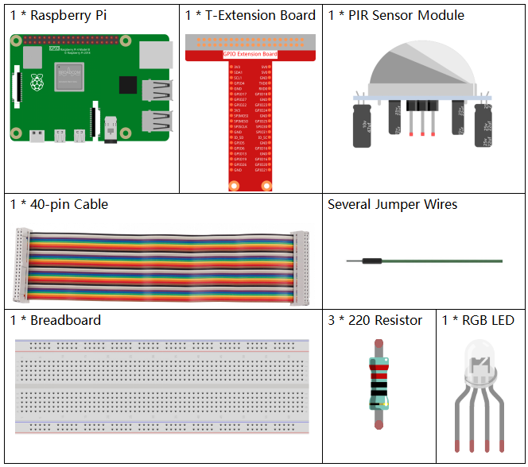
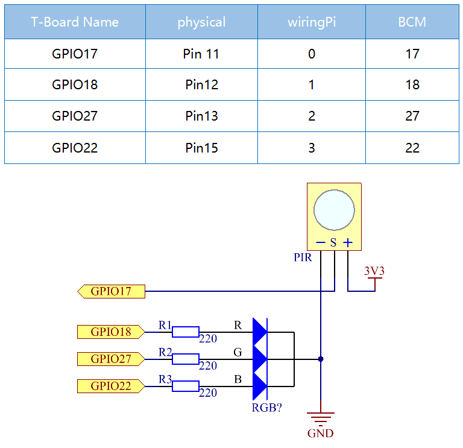

2.2.4 PIR¶
Introduction¶
In this project, we will make a device by using the human body infrared pyroelectric sensors. When someone gets closer to the LED, the LED will turn on automatically. If not, the light will turn off. This infrared motion sensor is a kind of sensor that can detect the infrared emitted by human and animals.
Components¶
Principle¶
The PIR sensor detects infrared heat radiation that can be used to detect the presence of organisms that emit infrared heat radiation.
The PIR sensor is split into two slots that are connected to a differential amplifier. Whenever a stationary object is in front of the sensor, the two slots receive the same amount of radiation and the output is zero. Whenever a moving object is in front of the sensor, one of the slots receives more radiation than the other , which makes the output fluctuate high or low. This change in output voltage is a result of detection of motion.

After the sensing module is wired, there is a one-minute initialization. During the initialization, module will output for 0~3 times at intervals. Then the module will be in the standby mode. Please keep the interference of light source and other sources away from the surface of the module so as to avoid the misoperation caused by the interfering signal. Even you’d better use the module without too much wind, because the wind can also interfere with the sensor.

Distance Adjustment¶
Turning the knob of the distance adjustment potentiometer clockwise, the range of sensing distance increases, and the maximum sensing distance range is about 0-7 meters. If turn it anticlockwise, the range of sensing distance is reduced, and the minimum sensing distance range is about 0-3 meters.
Delay adjustment¶
Rotate the knob of the delay adjustment potentiometer clockwise, you can also see the sensing delay increasing. The maximum of the sensing elay can reach up to 300s. On the contrary, if rotate it anticlockwise, you can shorten the delay with a minimum of 5s.
Two trigger modes: (choosing different modes by using the jumper cap).
H: Repeatable trigger mode, after sensing the human body, the module outputs high level. During the subsequent delay period, if somebody enters the sensing range,the output will keep being the high level.
L：Non-repeatable trigger mode, outputs high level when it senses the human body. After the delay, the output will change from high level into low level automatically.
Schematic Diagram¶
Experimental Procedures¶
Step 1: Build the circuit.

For C Language Users¶
Step 2: Go to the folder of the code.
cd /home/pi/davinci-kit-for-raspberry-pi/c/2.2.4/
Step 3: Compile the code.
gcc 2.2.4_PIR.c -lwiringPi
Step 4: Run the executable file.
sudo ./a.out
After the code runs, PIR detects surroundings and let RGB LED glow yellow if it senses someone walking by. There are two potentiometers on the PIR module: one is to adjust sensitivity and the other is to adjust the detection distance. In order to make the PIR module work better, you need to try to adjust these two potentiometers.
Code
#include <wiringPi.h>
#include <softPwm.h>
#include <stdio.h>
#define uchar unsigned char
#define pirPin 0 //the pir connect to GPIO0
#define redPin 1
#define greenPin 2
#define bluePin 3
void ledInit(void){
softPwmCreate(redPin, 0, 100);
softPwmCreate(greenPin,0, 100);
softPwmCreate(bluePin, 0, 100);
}
void ledColorSet(uchar r_val, uchar g_val, uchar b_val){
softPwmWrite(redPin, r_val);
softPwmWrite(greenPin, g_val);
softPwmWrite(bluePin, b_val);
}
int main(void)
{
int pir_val;
if(wiringPiSetup() == -1){ //when initialize wiring failed,print message to screen
printf("setup wiringPi failed !");
return 1;
}
ledInit();
pinMode(pirPin, INPUT);
while(1){
pir_val = digitalRead(pirPin);
if(pir_val== 1){ //if read pir is HIGH level
ledColorSet(0xff,0xff,0x00);
}
else {
ledColorSet(0x00,0x00,0xff);
}
}
return 0;
}
Code Explanation
void ledInit(void);
void ledColorSet(uchar r_val, uchar g_val, uchar b_val);
These codes are used to set the color of the RGB LED, and please refer to 1.1.2-RGB LED for more details.
int main(void)
{
int pir_val;
//……
pinMode(pirPin, INPUT);
while(1){
pir_val = digitalRead(pirPin);
if(pir_val== 1){ //if read pir is HIGH level
ledColorSet(0xff,0xff,0x00);
}
else {
ledColorSet(0x00,0x00,0xff);
}
}
return 0;
}
When PIR detects the human infrared spectrum, RGB LED emits the yellow light; if not, emits the blue light.
For Python Language Users¶
Step 2: Go to the folder of the code.
cd /home/pi/davinci-kit-for-raspberry-pi/python/
Step 3: Run the executable file.
sudo python3 2.2.4_PIR.py
After the code runs, PIR detects surroundings and let RGB LED glow yellow if it senses someone walking by. There are two potentiometers on the PIR module: one is to adjust sensitivity and the other is to adjust the detection distance. In order to make the PIR module work better, you need to try to adjust these two potentiometers.
Code
import RPi.GPIO as GPIO
import time
rgbPins = {'Red':18, 'Green':27, 'Blue':22}
pirPin = 17 # the pir connect to pin17
def setup():
global p_R, p_G, p_B
GPIO.setmode(GPIO.BCM) # Set the GPIO modes to BCM Numbering
GPIO.setup(pirPin, GPIO.IN) # Set pirPin to input
# Set all LedPin's mode to output and initial level to High(3.3v)
for i in rgbPins:
GPIO.setup(rgbPins[i], GPIO.OUT, initial=GPIO.HIGH)
# Set all led as pwm channel and frequece to 2KHz
p_R = GPIO.PWM(rgbPins['Red'], 2000)
p_G = GPIO.PWM(rgbPins['Green'], 2000)
p_B = GPIO.PWM(rgbPins['Blue'], 2000)
# Set all begin with value 0
p_R.start(0)
p_G.start(0)
p_B.start(0)
# Define a MAP function for mapping values. Like from 0~255 to 0~100
def MAP(x, in_min, in_max, out_min, out_max):
return (x - in_min) * (out_max - out_min) / (in_max - in_min) + out_min
# Define a function to set up colors
def setColor(color):
# configures the three LEDs' luminance with the inputted color value .
# Devide colors from 'color' veriable
R_val = (color & 0xFF0000) >> 16
G_val = (color & 0x00FF00) >> 8
B_val = (color & 0x0000FF) >> 0
# Map color value from 0~255 to 0~100
R_val = MAP(R_val, 0, 255, 0, 100)
G_val = MAP(G_val, 0, 255, 0, 100)
B_val = MAP(B_val, 0, 255, 0, 100)
#Assign the mapped duty cycle value to the corresponding PWM channel to change the luminance.
p_R.ChangeDutyCycle(R_val)
p_G.ChangeDutyCycle(G_val)
p_B.ChangeDutyCycle(B_val)
#print ("color_msg: R_val = %s, G_val = %s, B_val = %s"%(R_val, G_val, B_val))
def loop():
while True:
pir_val = GPIO.input(pirPin)
if pir_val==GPIO.HIGH:
setColor(0xFFFF00)
else :
setColor(0x0000FF)
def destroy():
p_R.stop()
p_G.stop()
p_B.stop()
GPIO.cleanup() # Release resource
if __name__ == '__main__': # Program start from here
setup()
try:
loop()
except KeyboardInterrupt: # When 'Ctrl+C' is pressed, the child program destroy() will be executed.
destroy()
Code Explanation
rgbPins = {'Red':18, 'Green':27, 'Blue':22}
def setup():
global p_R, p_G, p_B
GPIO.setmode(GPIO.BCM)
# ……
for i in rgbPins:
GPIO.setup(rgbPins[i], GPIO.OUT, initial=GPIO.HIGH)
p_R = GPIO.PWM(rgbPins['Red'], 2000)
p_G = GPIO.PWM(rgbPins['Green'], 2000)
p_B = GPIO.PWM(rgbPins['Blue'], 2000)
p_R.start(0)
p_G.start(0)
p_B.start(0)
def MAP(x, in_min, in_max, out_min, out_max):
return (x - in_min) * (out_max - out_min) / (in_max - in_min) + out_min
def setColor(color):
...
These codes are used to set the color of the RGB LED, and please refer to 1.1.2-RGB LED for more details.
def loop():
while True:
pir_val = GPIO.input(pirPin)
if pir_val==GPIO.HIGH:
setColor(0xFFFF00)
else :
setColor(0x0000FF)
When PIR detects the human infrared spectrum, RGB LED emits the yellow light; if not, emits the blue light.
Phenomenon Picture¶